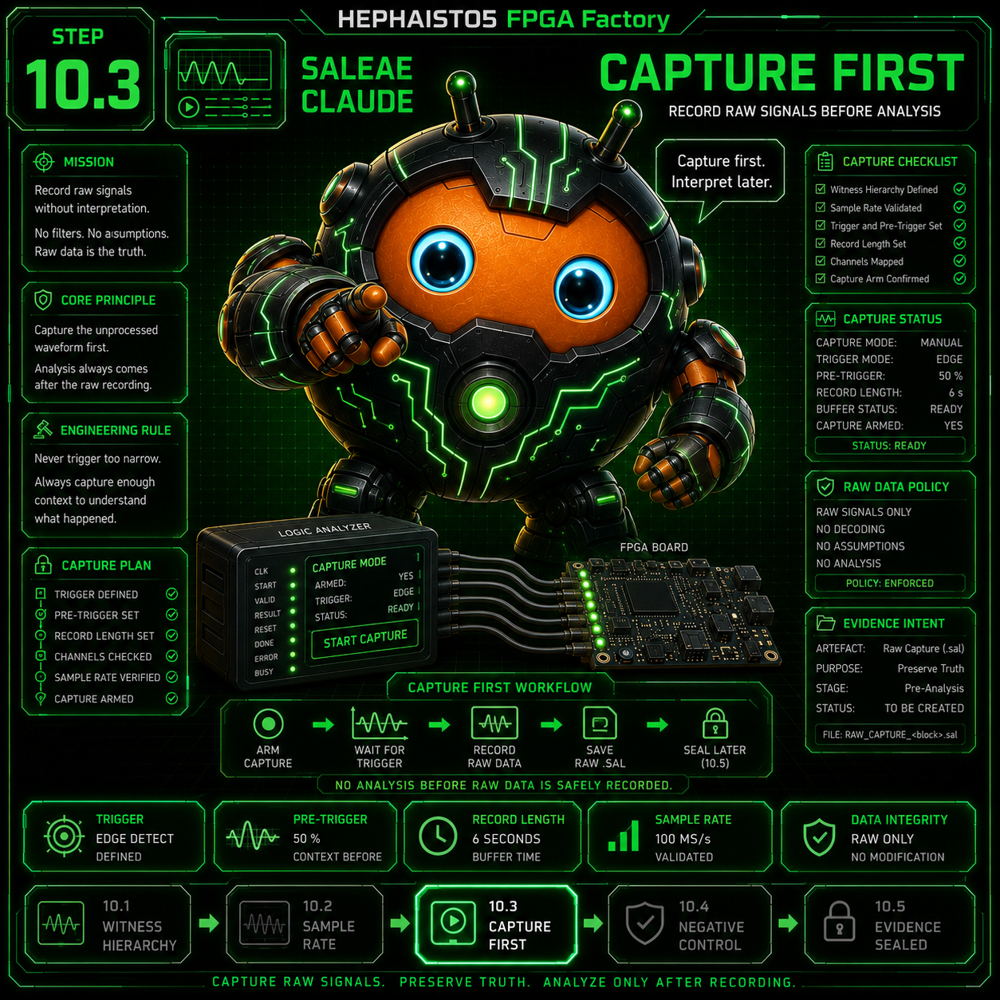
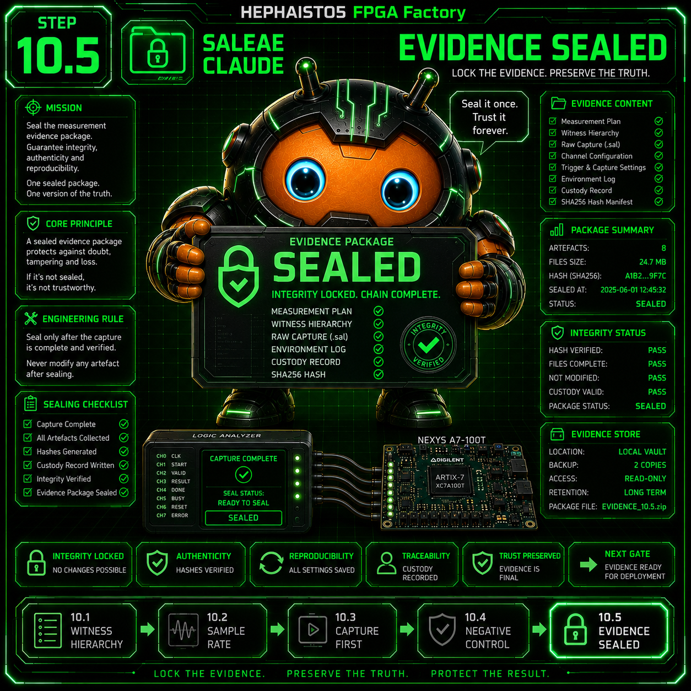
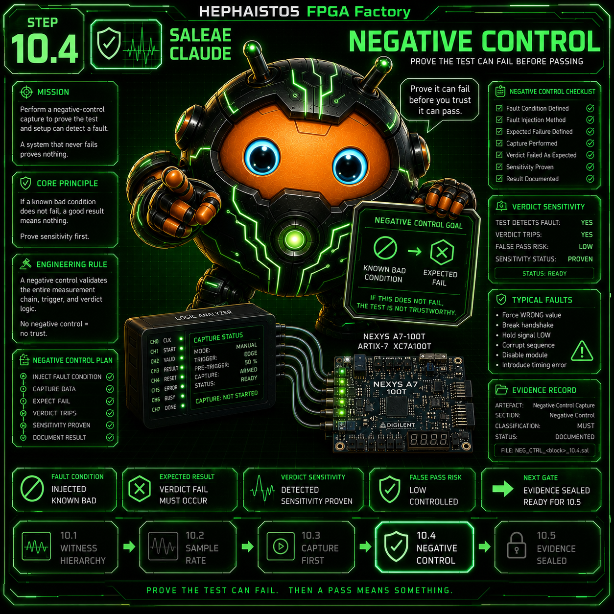

Rechnen, nicht raten: ein 80-ns-Puls bei 25 MS/s ist 2 Samples — leicht uebersehen. Fuer 1-Takt-Signale @100 MHz: ≥400 MS/s.

10.3 Capture-first
PruefaufgabeFrische Flanke im laufenden Capture
Beweis-Artefakt.sal + Flankenzeit
Aufnahme starten, DANN ausloesen (Re-Flash mid-capture): die frische Flanke gegen ein sauberes LOW-Vorfenster ist der Beweis — „war schon an“ beweist nichts.

10.4 Negativ-Kontrolle
Pruefaufgabe„Aus“ sieht auch als aus aus
Beweis-ArtefaktKontroll-Capture
Einmal zeigen, dass AUS als AUS gemessen wird — sonst ist jedes AN wertlos. Die Eichung der ganzen Messkette in einem Capture.

10.5 Beweis versiegelt
Pruefaufgabe.sal-SHA + Bit-SHA, Urteil aus Rohdaten
Beweis-ArtefaktCustody-Tabelle
Auto-Urteile sind Sensoren: erst Rohdaten, dann Urteil — zeit-gewichtet auswerten, nie CSV-Zeilen zaehlen. Hash-Paar = Beweiskette.